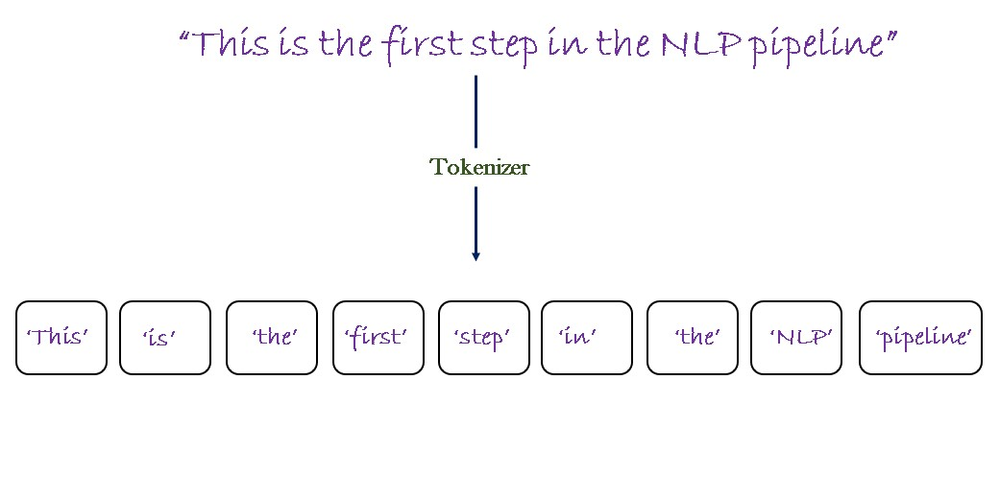
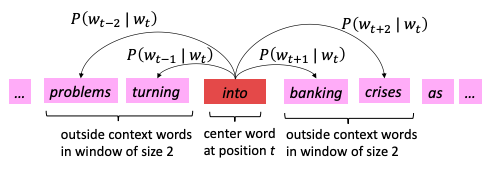
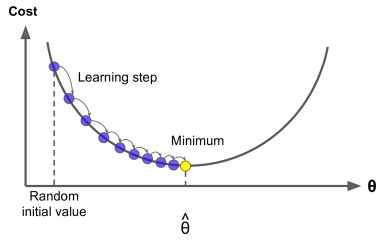
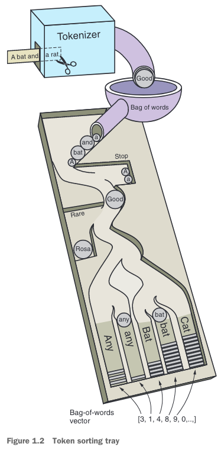
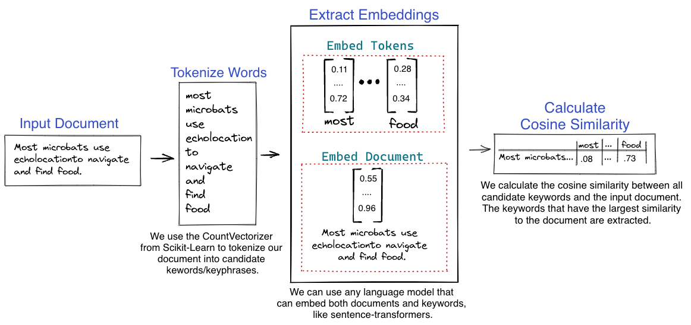
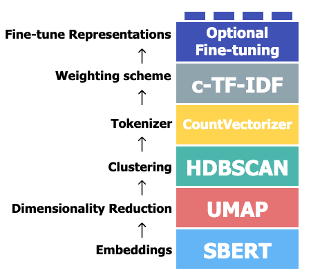

Word Embeddings & Topic Models
Motivation
This course will focus on Natural Language Processing (NLP) in the context of Deep Learning (DL).
Deep Learning is generally referred to as a sub-area of Machine Learning. Deep Learning uses neural networks (sometimes referred to as deep neural networks) to model and analyze large datasets.
“Natural language processing is an area of research in computer science and artificial intelligence (AI) concerned with processing natural languages such as English or Mandarin. This processing generally involves translating natural language into data (numbers) that a computer can use to learn about the world. And this understanding of the world is sometimes used to generate natural language text that reflects that understanding.” (cite Natural Language Processing in Action)
In the field of Social Science we mostly deal with Natural Language. Hence, this course focusses on the intersection of those two topics.
The following table highlights some of the most common use cases of NLP. After finishing this course you should be able to tackle those tasks for your own projects.
| NLP Task | Definition |
|---|---|
| Machine Translation | The process of automatically converting text from one language to another. |
| Text Summarization | Summarzing large quantities of text by shortening the text or by extracting relevant topics and keyphrases. |
| Question Answering and Information Retrieval | The task of automatically providing answers to questions posed in natural language based on information retrieved from a large dataset or collection of documents. |
| Chatbots and Dialogue Systems | Systems designed to simulate conversation with human users to assist, provide information, or entertain. |
| Speech Recognition and Text to Speech | Technologies that convert spoken language into text (Speech Recognition) and written text into spoken audio (Text to Speech). |
| Annotating Linguistic Structure | The process of labeling textual data with syntactic, semantic, and morphological features of a language. |
(mostly taken from Speech and Language Processing)
Basics
This course will mainly focus on the processing of natural language to extract useful information. Most of the algorithms that we will introduce originate from the fields of statistics or geometry. The methodologies we will cover throughout this course will introduce you to the most common tasks in the overlap of NLP and DL.
Preprocessing
One key step in order for machines to work with natural language is preprocessing. In this part some of the most common preprocessing steps are briefly introduced.
Text Normalization
Generally the first step before applying any advanced NLP algorithms is dealing with Text Normalization The most important tasks that fall within this category are:
| Text Normalization Task | Definition |
|---|---|
| Lowercasing | Normalizing the text by lowercasing all characters. |
| Dealing with Regular Expressions* | Manipulating the text string by deleting, replacing certain patterns, symbols or characters. |
| (Stop)word Removal | Removing any irrelevant words from the text. |
| Standardizing the text | Standardizing the text by encoding it to some well-known communication standards such as UTF-8 or ASCII. |
(mostly taken from Speech and Language Processing)
*Regular Expression refers to a specific language used for searching any patterns, symbols, characters within text strings.
Word Tokenization and Chunking
In NLP tokenization is used to break documents and sentences into smaller units. In most of the applications tokens are the words within a document delimited by spaces. Nonetheless for some applications, such as Topic Modelling, tokens can also be sequences of words generally referred to as n-grams. In particular, bigrams consist of two, trigrams of three words and so on. Chunking is a method to limit the input to the DL models depending generally to the allowed context window size. Tokenization is also a form of chunking. Both methods are necessary to deal with the limited context window of neural networks.

Stemming and Lemmatization
In some NLP applications it is important to reduce the multitude of forms words can occur in (e.g. to sing, singing, sang, etc. for sing) into a single normalized form.
A first approach to normalize those forms is called stemming. The goal of stemming is to eliminate pluralization, possesive ending of words and reduce various forms of verbs to their root form. Stemming removes suffixes from words without changing any characters. Hence, the words ‘to sing, singing and sang’ would be reduced to ‘to sing, sing and sang’.
The second very common normalization approach, called lemmatization, tries to capture the semantic root of a word by not only removing additional suffixes, but also for transforming words back to their root form (e.g. past tense verbs into present tense). For this lemmatizers rely on an extensive knowledge base of of word synonyms and sometimes even require grammatics to correctly assign the semantic root. In our example the words ‘to sing, singing and sang’ would be reduced to ‘to sing, sing and sing’.
Word Vectors
Word vectors or embeddings are a sophisticated form of feature representation that transforms words into vectors of real numbers. This transformation is crucial for machine learning models to process natural language data efficiently. Embeddings capture not only the semantic meanings of words but also their contextual relationships within a corpus, enabling models to perform tasks like sentiment analysis, topic modeling, and social network analysis effectively.
One-Hot Encoding
A first approach to construct vectors from words is the idea of one-hot encoding. The vectors dimension is equal to the number of words in the vocabulary for the underlying context.
Example: - tree = [0 0 0 1 0] - bush = [0 0 1 0 0]
The biggest downside of this approach is that it is not able to capture any word relationships or semantics within this encoding. Even though the words tree and bush are closely related, their vectors are strictly orthogonal. Imagine a web search with the goal of extracting any passages related to forestry, due to the orthogonal nature of the vectors it would not be able to capture these two examples.
Semantical Word Representations
The solution is to embed the similarity of words in their vectoral representations.
Definition of Meaning In NLP an often cited definition of meaning or semantics is the one given by J.R. Firth (1957 - search for reference) stating: “You shall know a word by the company it keeps”
This definition relates the semantics of a word towards other words which frequently appear in proximity to the focal word (distributional semantics). Instead of one-hot encoding words, their vector representations are learned which results in word embeddings having geometrical meaning (e.g. a scalar product of two similar words will be larger than the scalar product of two dissimilar words).
Example - tree = [0.286 0.792 −0.177 −0.107 0.109] - bush = [0.295,0.785,−0.180,−0.115,0.112]
PUT HERE A NICE WORD EMBEDDING MAP WITH A FEW WORDS
Word2Vec
The framework Word2Vec, famously introduced by Mikolov et al. (2013), has been a groundbreaking paper implementing the notion of distributional semantics. Building upon a large body of text, the word vectors are iteratively adjusted based on their neighboring words. By relying on the maximization of the dot product between center and context word vectors, the word embeddings are constructed.
We will explain the example of the Word2Vec model in more detail, as it serves as one of the core foundations for working with word vectors. In general, there are two variants of the Word2Vec model:
- Skip-Gram - the word embeddings are fine-tuned based on the predictions of the context (outside) words given a center/focal word.
- Continuous Bag of Words (CBOW) - the word embeddings are fine-tuned based on the prediction of the center word, given the surrounding/context words.
We will show the approach for coming up with the Skip-gram based word embeddings in more detail.
Let c denote the center word and o denote all context words. The overarching goal is to adjust the word embedding of c so that the probabilities shown in Figure (cite figure) are highest for the most prominent context words.

The goal is to maximize the likelihood of predicting the correct context words, given the current feature vector of word wt at timestamp t.
Likelihood = \(L(\theta) = \prod_{t=1}^T \prod_{\substack{-m \leq j \leq m \\ j \neq 0}} P(w_{t+j} \mid w_t; \theta)\)
\(\theta\) denotes all parameters (in this case, word vectors in the vocabulary) of the model itself which are to be optimized. In the Word2Vec algorithm, each word in the vocabulary has two vectors, one for being the center word vc and one for being a context word uo.
In Machine Learning and Deep Learning, we prefer working with minimizing a so-called loss function. Therefore, we rewrite the expression as:
\(J(\theta) = -\frac{1}{T} \log L(\theta) = -\frac{1}{T} \sum_{t=1}^T \sum_{\substack{-m \leq j \leq m \\ j \neq 0}} \log P(w_{t+j} \mid w_t; \theta)\)
This term is called the negative log likelihood and is a very common loss function in these fields.
So how do we calculate \(P(w_{t+j} \mid w_t; \theta)\)? We simply take vc as the word vector of the center word and uo as the word vector of the context word and calculate the scalar product. The result is then normalized by the sum of all dot products of the word vector of the center word vc with all words from the vocabulary uw.
\(P(o \mid c) = \frac{\exp(u_o^T v_c)}{\sum_{w \in V} \exp(u_w^T v_c)}\)
This expression is a common one in Deep Learning and Machine Learning called the Softmax function. This term is usually used in the context of neural networks to map arbitrary values (in this case, the scalar product of uo and vc) to a probability distribution, by amplifying (max) larger values in the distribution and still assigning soft values to smaller values in the distribution.
The model parameters, all feature vectors for all words in the vocabulary, are now gradually adjusted to decrease the negative log-likelihood.
\(\theta = \begin{bmatrix} v_{\text{aardvark}} \\ v_a \\ \vdots \\ v_{\text{zebra}} \\ u_{\text{aardvark}} \\ u_a \\ \vdots \\ u_{\text{zebra}} \end{bmatrix} \in \mathbb{R}^{2dV}\)
Now, how do we adjust the parameters towards the best result? This is done by iteratively moving towards the direction of lower log-likelihood (negative gradient descent). For this, we need the derivative of the negative log-likelihood function, which in a high-dimensional vector space is called a gradient. The underlying concept is called gradient descent and is another prominent algorithm from the field of deep learning.

So the equation for updating the parameters in our models becomes:
\(\theta_{\text{new}} = \theta_{\text{old}} - \alpha \nabla_{\theta} J(\theta)\)
For large vocabularies, computing each and every derivative becomes very cumbersome. Therefore, in practice, the stochastic gradient descent (SGD) algorithm is very common. SGD randomly samples values from \(\theta\) for which the derivatives are computed. By randomly choosing the values from \(\theta\), the algorithm converges.
Word Vector Characteristics
One of the most prominent analogies of word vector geometry is the capturing of semantic and syntactic analogies. Taking the word vectors of the words man, woman and king, one should be able to derive the word vector of queen.
In particular: \(man - woman = king - queen\) -> \(queen = king - man + woman\)
By harnessing the power of word embeddings we are able to compute word similarities. In this example the maxmium similarity is 10, whereas no similarity is indicated by 0. | Word1 | Word2 | Similarity | |———-|————|————| | vanish | disappear | 9.8 | | belief | impression | 5.95 | | muscle | bone | 3.65 | | modest | flexible | 0.98 | | hole | agreement | 0.3 | (taken from Speech and Language Processing)
Topic Models
We are now tackling the first real application of NLP within this course, which shall be Topic Models. Topic Models are used to generate or extract the n-grams which are most suitable to describe the content of a text. Therefore, these methodologies fall into the task of text summarization. Several different approaches shall be briefly introduced
Bag-of-words
A first approach is purely relying on word or token count and can be used to extract the most common tokens within a text and use them as their topics/keyphrases. In the following image (cite image) the NLP pipeline for the bag-of-words approach is nicely depictured. After tokenizing (and potentially lemmatizing or stemming) the tokens are used as input to the simple bag-of-words counter. Prior to counting the occurrences of each token the bag-of-words vector is initialized, including all relevant tokens whose frequencies shall be counted. Furthermore, rare tokens and stopwords are excluded from the analysis. 
Tf-Idf
A more sophisticated and very common approach is called TF-Idf (Term Frequency - Inverse Document Frequency), which considers the term frequency of a word in one document and relates it to the inverse of the number of documents the term occurs in. The Tf-Idf score yields high values for terms which are very common within one document, but usually do not occur too frequently in the whole corpus. Hence, those words tend to be very important for one particular text.
The formulas for the TF-IDF are written as:
\(tf(t, d) = \frac{\text{count}(t)}{\text{count}(d)}\)
\(idf(t, D) = \log \left(\frac{\text{number of documents}}{\text{number of documents containing } t}\right)\)
\(tfidf(t, d, D) = tf(t, d) \times idf(t, D)\)
\(t\) denotes the term for which we want to compute the Tf-Idf score, \(d\) represents the focal document and \(D\) the corpus of all documents. Therefore is \(count(t)\) the count of term \(t\) in document \(d\) and \(count(d)\) the count of all terms in document \(d\) also including multiple occurences.
Latent Dirichlet Allocation (“Latent Dirichlet Allocation” by David M. Blei, Andrew Y. Ng, and Michael I. Jordan (http://www.jmlr.org/papers/volume3/blei03a/blei03a.pdf))
Latent Dirichlet Allocation (LDA) is a statistical model for topic modeling introduced by researchers David Blei, Andrew Ng, and Michael I. Jordan. It has become a foundational method in the field of natural language processing (NLP) for discovering abstract topics from a collection of documents.
LDA is based on the premise that documents are mixtures of topics, where a topic is characterized by a distribution/collection over words.
Modeling Process: Initialization: The user specifies the number of topics \(K\) to be extracted from a corpus. Each topic is represented as a distribution over words, and each document is represented as a distribution over these topics.
Word Distribution: For each topic \(k, a\) distribution over the vocabulary is sampled from a Dirichlet distribution defined by a parameter \(\beta\). Topic Distribution for Documents: For each document \(d\), a distribution over the topics is sampled from a Dirichlet distribution defined by a parameter \(\alpha\).
Word Assignments: Words in each document are assumed to be drawn from a topic-specific word distribution. The specific topic for each word is sampled according to the document’s distribution over topics.
Iterative Sampling: The assignments of topics to words are then iteratively updated through a process such as Gibbs sampling or variational inference. This iterative process continues until the model converges or a pre-specified number of iterations is reached.
The model yields clusters of words that represent topics. For example, a “finance” topic might include high probabilities for words like “bank,” “money,” and “debt.” Each document in the corpus is then represented as a mixture of these topics, which can be used for various applications such as document classification, information retrieval, and content recommendation.
LDA assumes documents are produced from hidden topics, where each topic is characterized by a distinct distribution over words. This allows it to capture hidden thematic patterns across documents, which are valuable for understanding and organizing large datasets.
KeyBERT (https://maartengr.github.io/KeyBERT/)
For the last two topics models let’s focus more on using Large Language Models for Topic Modelling.
The first approach is a very simple implementation harnessing the power of word embeddings, generated from Large Language Models. The following picture already shows all the magic:

BERTopic (https://maartengr.github.io/BERTopic/index.html)
A more comprehensive approach, which also harnesses the power of word embeddings is called BERTopic. BERTopic is an approach that builds upon a NLP pipeline to extract topics for a corpus.
The different steps in the algorithm are: 1. Embedding of all documents in the same vector space 2. Reducing the dimensionality of the embeddings 3. Clustering the documents into groups of potentially the same topics 4. Building a bag of words of the previously computed clusters by concatenating all documents within a cluster 5. Using a weighted form of the TF-IDF algorithm (IDF focusses on clusters not documents) to extract relevant topics 6. Fine-tune the result (optional)
